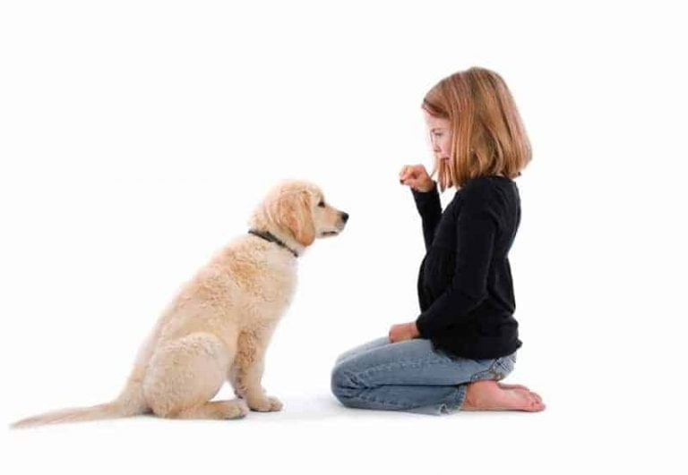

<div class="row">
    <div class="col-md-4">
        <div class="card box">
            <center>
                <h1 class="card-title" style="padding-top: 20px;font-size: 35px;">SIT</h1>
            </center>
            <center></center>
            <div class="card-body">
                
                <p class="Card-text" style="font-size: 20px;padding-left: 10px; "> How to train your dog to sit ? <br>
                    <br>
                    Sit first because it’s the most natural concept for most dogs.... It's
                    therefore also one of the easiest for them to learn, so even pets who are new to
                    training
                    can get the hang of it within a few sessions.... And because it's also a transition
                    command,
                    once a dog can sit, you can move on to other directives....
                    Begin by holding a dog treat in front of your dog's nose.... Lift the treat over the top of your
                    dog's
                    head to encourage them into a sitting position.... As your dog lifts their head to follow the treat,
                    they should naturally sit.... Reward your dog for their good behaviour.

                    Repeat these steps several times a day until your dog understands.... After this, continue to use
                    the
                    hand gesture and gradually remove the treat.... Once your dog reliably sits, you can introduce a
                    verbal
                    cue at the same time.

                    Obedience training relies on two fundamental principles of body language of the trainer and
                    acquainting the dog with certain speech sounds in correlation with their basic meaning.... The trainer
                    must exude calm and positive energy that is the first step to attain the position of a pack leader
                    that is closely linked to dog training.... Sit command being the very first of the things you want your
                    dog to learn must be exercised at puppy stage.... a regular training routine for dogs must start when
                    3-4 months of age or even earlier for the ones with fiery Dogs.
                </p>
            </div>
        </div>
    </div>
</div>